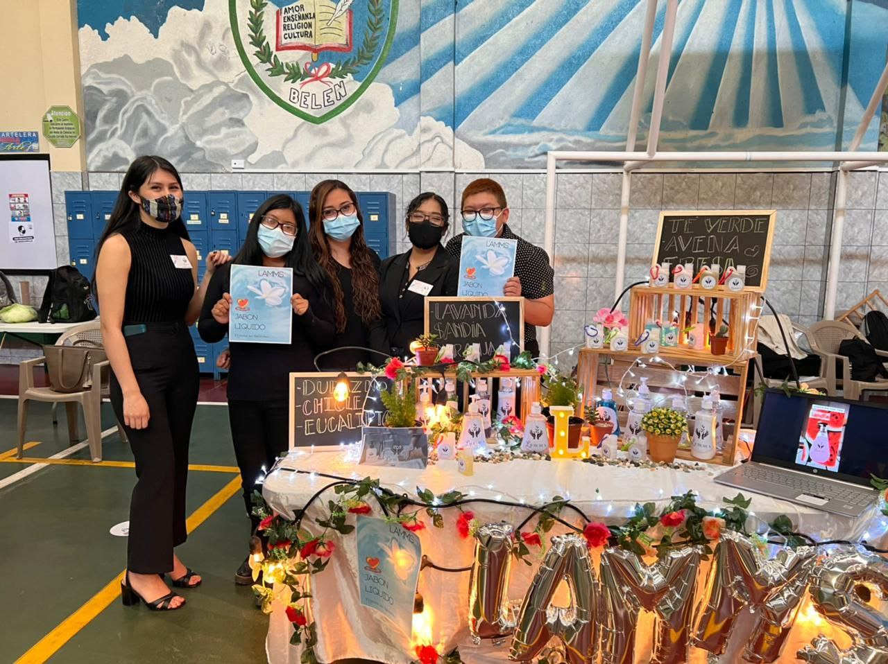

Razones para estudiar Administración de Empresas
Opiniones de alumnos de la Carrera de Administración de Empresas
Elegir determinada carrera puede ser una decisión complicada de tomar, te presentamos algunas razones por las cuales la licenciatura en Administración de Empresas es una excelente opción. Los estudiantes de Administración comparten sus opiniones.
Estudiar la carrera de Administración de empresas me ha permitido grandes posibilidades de superación. La considero una de las mejores carreras profesionales. La decisión de desarrollarme como profesional ha beneficiado mi vida. Se han abierto oportunidades laborales y además realice mi propio emprendimiento.
Daniela García
Si queremos destacar cómo líderes en una empresa, la piedra angular es la Administración y así lograr el mejor funcionamiento empresarial, ya que la licenciatura nos da la formación integral que se necesita.
Jesenia Ruano
La administración abre una nueva etapa para el desarrollo de la vida, para el emprendimiento, para el futuro, brinda ideas y soluciones a los problemas más complejos de cada empresa. El estudiar administración de empresas es una de las mejores herramientas para el desarrollo profesional.
Melvin García
Una razón para estudiar administración es llegar a conocer métodos y estrategias para aprovechar al máximo los recursos con los que se cuenta, sin necesidad de realizar un gasto adicional, también poder adquirir conocimientos muy importantes para dirigir un equipo de trabajo, conocer la forma correcta y adecuada para poder dar a conocer un producto que desea ponerse a disposición de un público en general
David Ajmac
Estudiar Administración de Empresas brinda la oportunidad de no solo trabajar para alguien si no para crear tu propio emprendiendo debido a que desarrollamos diferentes habilidades y nuevas técnicas para crear una empresa funcional y poder dirigir de manera correcta al personal, con objetivos claros.
Gabriela Aguare.
Estudiar administración de empresas nos ayudan a entender y analizar cómo lograr el buen desarrollo de un negocio o empresa. Con los conocimientos que nos brinda esta licenciatura podemos mejorar nuestras habilidades de liderazgo, comunicación y toma de decisiones. Administrar los recursos humanos comprendiendo cómo reaccionan las personas ante diferentes situaciones empresariales.
Sharon Rodas
Estudiar la licenciatura en administración de empresas genera el camino a diversas oportunidades y por supuesto, crear nuestro propio emprendimiento, nos prepara para desarrollar nuestras habilidades para ser líderes, entender y analizar a las personas, conocer sus necesidades y entender cuáles son sus motivaciones.
Mónica de León
La administración de empresas es muy importante para todas las organizaciones, es por ello por lo que al estudiar administración de empresas se obtendrán los conocimientos para crear nuevos proyectos y generar grandes ventas. Al estudiar administración se tienen muchas más oportunidades laborales desde gerente, director, supervisor, y hasta crear tu propio emprendimiento.
Mishelle López
El administrar es una habilidad que, si bien puede ser aplicada por todas las personas, llega un punto en el que la carga de trabajo es demasiada que las personas pierden el control de las actividades. Por lo que la Administración de empresas nos brinda diferentes tipos de herramientas que se adaptan a un amplio espectro de necesidades para todo tipo de empresas. Para entender la visión de cada departamento que conforma la organización, o para comprender al recurso humano y sus necesidades.
Yimmy López
Alumnos de Administración de Empresas, sede La Florida, Actividad de mercadotecnia
Un esfuerzo que trae Recompensas
ENTREVISTA A SANDRA DANIELA, ESTUDIANTE DE SEXTO CICLO ADMINISTRACIÓN DE EMPRESAS ENTREVISTA REALIZADA POR ROBERTO, ESTUDIANTE DE SEXTO CICLO ADMINISTRACIÓN DE EMPRESAS
Un administrador de empresas desarrolla varias capacidades y conocimientos a lo largo de su vida que con la práctica se potencializan, la creatividad, el liderazgo, habilidades como el trabajo en equipo y la adaptación a los cambios son vitales para un profesional de la administración. Es por ello, que en esta ocasión entrevistamos al Licenciado Meléndez que cuenta con una amplia trayectoria y experiencia en el sector empresarial.
El licenciado Meléndez es licenciado en Administración de Empresas, graduado de la Universidad Mariano Gálvez, además cuenta con una maestría en administración de negocios con mención en marketing de la universidad Mariano Gálvez. El profesional nos comenta que fue lo que lo motivo a convertirse en un administrador de empresas:
“Desde los 18 años me he dedicado a las ventas, siempre me gustó el área comercial, con la experiencia que obtuve en mi trabajo logré emprender un negocio, fue acá donde me di cuenta de que era lo que debía estudiar”.
Nuestro entrevistado menciona que al inicio de la carrera encontró gran similitud de los contenidos de los cursos con la forma en la que el realizaba actividades en su empresa.
“Le encontré sentido a todo, venía ejerciendo la Administración de forma empírica, cuando inicié la carrera me di cuenta de que, buena parte ya la ejercía, solo que todo tiene un nombre.
Por ejemplo, yo llevaba la administración de mi negocio, contrataba personal, revisaba la contabilidad con el contador, hacía labor de Marketing y ventas”.
El licenciado menciona que la carrera de Administración de empresas es muy completa, y da al profesional un plus, ya sea para emprender o para laborar para una organización. El administrador necesita conocer sobre varias dinámicas del negocio. “En el año 2009 fui contratado para un proyecto en Guatemala, mi puesto fue el de Gerente Comercial, por falta de personal desarrollé también labores como R.R.H.H, ventas, apertura de puntos de venta, entre otras”.
“Inicie administrando el negocio con 15 personas y llegue a tener casi 800 personas a mi cargo. Fue una bonita experiencia, aprendí mucho, los socios de la empresa me permitieron desarrollar el negocio y este tuvo mucho éxito, hoy en día es la empresa líder en Guatemala en su ramo, laboré para esta empresa nueve años”.
Se le solicito al catedrático que compartiera un consejo para los jóvenes que desean estudiar administración de empresas:
“Mi consejo es que se esfuercen y luchen por sus sueños, todos tenemos oportunidades en la vida, es de aprovecharlas cuando lleguen; los límites solo nosotros los ponemos en nuestra mente.
Hay que prepararnos académicamente, aprovechar el tiempo, todo nos servirá un día, no desperdiciar el tiempo en cosas que no generan, aprovechen cada día en algo que les pueda servir, estudiar inglés, ser experto en Office, esto ayuda a conseguir un mejor empleo, y por ende un mejor salario”.
Sandra Daniela
Una chispa que enciende el emprendimiento
ARTÍCULO POR ESMERALDA GÓMEZ ESTUDIANTE DEL SEXTO CICLO DE ADMINISTRACIÓN DE EMPRESAS
Mi experiencia al formar parte de la Feria de Negocios UMG zona 19 fue muy satisfactoria pues al participar puse en práctica los conocimientos adquiridos a lo largo de los casi tres años que llevo cursando la Licenciatura. Amplíe mis conocimientos sobre emprender y las decisiones que se requieren tomar, decisiones como la inversión para llevar a cabo nuestro proyecto, la elección de nuestro producto pues nuestro objetivo era crear una nueva necesidad en el consumidor. La marca, diseñar el logo, el empaque, y sobre todo la planificación y organización que se llevó a cabo para la presentación de la marca, pues se tuvieron que tomar decisiones sobre la elección de la publicidad, la innovación en el diseño del estand para lograr captar la atención del público, además de la información y presentación de la marca para generar el interés en el público.
"Además, hay que considerar que con esta experiencia para muchos de los participantes fue fuente de inspiración para emprender, aclararon sus ideas y su dirección en la que quieren invertir sus esfuerzos. “"

Emprendimiento Guatemala
ARTICULO POR EDWIN EDUARDO PATZÁN CANEL, ESTUDIANTE DE SEXTO CICLO DE ADMINISTRACIÓN DE EMPRESAS
Guatemala es un país con espíritu emprendedor teniendo una tasa activa de emprendimiento de 20.4%, la cual se toma con relación al promedio más alto de la región de Latinoamérica que es de 17.6% 2 de cada 5 guatemaltecos ponen en marcha un nuevo emprendimiento el cual 60% de los emprendimientos es realizado por menores de 35 años. Por una alta tasa de emprendimiento se ha buscado incentivar y fortalecer el emprendimiento por medio de apoyo técnico y financiero el cual en 2018 se aprobó el DECRETO 20-2018 (ley de fortalecimiento al emprendimiento) facilitando así al emprendedor en su camino como empresario desarrollándose de forma exitosa.
En Guatemala, se fomenta el emprendimiento a través de programas de sensibilización, centros de emprendimiento, incubadora de negocios. Muchos programas e instituciones ayudan al emprendedor a superar los retos.
Fuente: Global Entrepreneurship Monitor (GEM). (s.f.)
Obtenido de https://gem.ufm.edu/.
Adaptación al método virtual
La experiencia de la educación virtual adquirida fue un gran cambio en el cual todos los estudiantes se adaptaron, el uso de herramientas tecnológicas que facilitan el trabajo en equipo fue una experiencia retadora.
Los estudiantes han sido efectivos los conocimientos adquiridos y se han desarrollado de una mejor manera.
La experiencia de estudiar en modalidad virtual tiene múltiples ventajas, algunas de ellas es organizar de forma eficiente el tiempo. Al inicio se vivió una etapa de conflicto, esta etapa fue difícil pero corta debido al compromiso y a la responsabilidad que se ve reflejada en cada uno de los estudiantes y educadores.
La comunicación y cooperación que se da entre los grupos de estudiantes facilito la toma de decisiones y la resolución de problemas en el entorno de aprendizaje, la colaboración entre los grupos de trabajo fluyo a través de la tecnología permitiendo compartir ideas y nuevas propuestas que fortalece los conocimientos.
Estudiantes de UMG en el método virtual